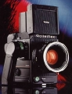

无忌
器材库
全部器材
产品年表
名词百科
榜单
器材库
> 120中幅相机 > Rolleiflex 6008 Integral

禄来
Rolleiflex 6008 Integral
4.28
综合评分
分类
120中幅相机
点评
0 条
图片
0 张
评测
0 篇
Rollei Rolleiflex 6008 Integral，是一款中画幅SLR，电子控制，拥有多模式曝光控制、多模式测光、自动TTL闪光控制等功能。
产品类型
120中幅相机
综合评分
4.28分
无忌评测
暂无评测
规格参数
网友点评
(0)
产品图 / 样片
(0)
评测文章
(0)
规格总览
产品类型
120中幅SLR
发布日期
未知
标称画幅
6 x 6 / 6 x 4.5cm
后背
120, 220, Polaroid, 数码后背
取景规格
对焦屏
High-D高亮度对焦屏，可更换
取景器信息
数字式LED显示光圈、快门速度(1/3EV)、手动曝光补偿、自动曝光补偿、点/多点测光、闪光灯充电完毕、电池状态、可关闭
景深预视
有
镜头和对焦
镜头卡口
Rollei M
镜头卡口类型
Rollei卡口，有10针电子触点(传输光阑和快门 数据)，即使使用皮腔、近摄接圈和反接接圈都能保持完整的曝光控制
标准镜头
Zeiss Planar 80mm PQ
曝光控制
测光系统
多分区中央重点加权测光：测光元件在反光镜后，7个测光元件分成5组；中心点测光：3%；多点测光：最多5点；在测光和曝光过程中杂光自动补偿。
测光范围
0EV~19EV
曝光补偿
-42/3 ~ +2EV以1/3EV级调整
多重曝光
有
自动包围曝光
有
自动曝光锁
有
ISO感光度
25-6400
快门
电子控制镜间快门
快门速度
B, T, 30 - 1/1000秒
闪光同步速度
全同步：30 - 1/1000
闪灯控制
TTL测量胶片平面，独立SPD测光；填充闪光、充电完毕 ISO 25-1600
过片系统
过片
内置马达自动过片，单张/连续过片，最高2.5fps
其它规格
机背显示
拍摄张数，胶卷速度调校（电子输入机身），胶卷种类
接口
PC端子, 热靴, 快门线插孔, 三脚架接孔, 红外遥控
电池
可充电镍镉电池，可拍摄500张，快速充电；后备镍镉电池；汽车充电插头
机身尺寸
143x139x124mm
机身重量
1450g
机身+120后背+标准镜头+取景器尺寸
（含标准镜头）143x139x176mm
机身+120后背+标准镜头+取景器重量
（含标准镜头）2060g
该产品暂无存档的网友点评
该产品暂无存档的产品图
评测 / 相关文章
该产品暂无存档的评测文章